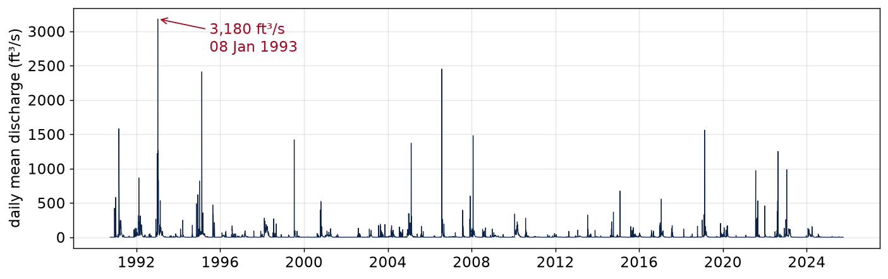
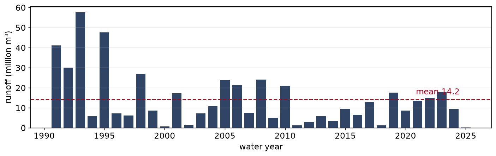
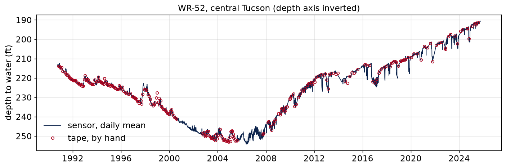
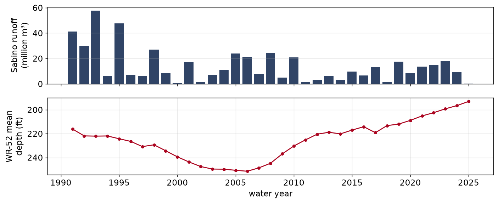

HWRS 564a · Week 12 · Tuesday, November 10
Week 12, session 1 of 2
dataretrieval packageMost projects need several datasets, such as a stream gage, a few wells, and maybe a satellite product, and they rarely share the same time step or units. Today we pull a stream and a well from the USGS, put them on the same time axis, and look at where other kinds of data come from.
You can download a CSV from a website by clicking through it. An API (application programming interface) is a web address you build yourself that returns the data directly:
https://api.waterdata.usgs.gov/ogcapi/v0/collections/daily/items
?monitoring_location_id=USGS-09484000
¶meter_code=00060
&time=2024-10-01/2025-09-30
? starts the options and & separates themPaste that into a browser and you get the data back as text. Because the request is written in your code, anyone can rerun it and get the same data, and changing the site or dates is a one-word edit.
dataretrieval builds the URL for youdataretrieval is the USGS’s Python package for its water data. It builds the URL, sends the request, and turns the response into a pandas DataFrame. It is already installed in the course environment.
from dataretrieval import waterdata
q, md = waterdata.get_daily(
monitoring_location_id="USGS-09484000",
parameter_code="00060",
time="2024-10-01/2025-09-30",
)Each call returns two things: the data (q, a DataFrame) and metadata (md). md.url is the exact URL that was sent.
Use waterdata, not nwis. Most tutorials online use dataretrieval.nwis. The USGS is retiring the services behind it: some nwis functions are deprecated and some, like nwis.get_gwlevels, no longer exist. If code from a tutorial fails because a function is missing, the tutorial is probably older than the package.
DeprecationWarning: `nwis.get_record` is deprecated and will be removed
from `dataretrieval` on or after 2027-05-06; use the appropriate
`waterdata.get_*()` for the service you need instead.A warning is not an error, and your code still runs. After the removal date, the same line raises an error, so it is worth switching when you first see the warning.
A request can fail for reasons outside your code:
Recent data is also provisional and can be revised after you download it. Every notebook in this course that calls an API also ships a saved copy of the data, so the lab works in class either way.
def load_sabino():
"""Daily discharge at Sabino Creek. Live if possible, cached if not."""
try:
q, md = waterdata.get_daily(
monitoring_location_id="USGS-09484000", parameter_code="00060",
statistic_id="00003", time="1990-10-01/2025-09-30")
print(f"live from the USGS: {len(q):,} rows")
return tidy(q)
except Exception as exc:
print(f"live fetch failed ({type(exc).__name__}); using the cached copy")
return pd.read_csv(DATA / "cache" / "waterdata_09484000_daily.csv",
parse_dates=["date"])Both branches return the same columns, and the function prints which one ran, so a failed request is never silent.
Hint
Try the live request first. If anything goes wrong, fall back to the cache. Both branches need a return.
A data file with no record of where it came from is hard to trust or update. The course cache is built by a script in the repository:
python scripts/fetch_data.py --list # what gets built
python scripts/fetch_data.py --week12 # rebuild today's filesEvery file in data/cache/ was written by that script, so you can read exactly which request produced it. For your own projects, save the request alongside the data and note the date you pulled it.
dataretrieval.waterdata mirrors how the USGS now organizes its data — by collection:
| Function | Answers |
|---|---|
get_monitoring_locations |
what sites exist here? |
get_time_series_metadata |
which of them measure what, and for how long? |
get_daily |
daily summaries of a sensor record |
get_continuous |
the raw sensor readings, every 15 minutes or so |
get_field_measurements |
readings taken by hand, on a visit |
The first two are small and fast. Use them to pick a site before downloading a long record.
You need groundwater levels for a list of well IDs. nwis.get_gwlevels is gone. Pick the replacement.
Hint
Most water levels in a basin monitoring network are measured by someone visiting the well with a tape a few times a year, not by a logger.
Solution
from dataretrieval import waterdata
series, md = waterdata.get_time_series_metadata(
bbox=[-111.10, 32.15, -110.70, 32.40], # west, south, east, north
parameter_code="72019", # depth to water below land surface
)| Well | Type | Depth (ft) | Daily record |
|---|---|---|---|
USGS-321208110525001 · C-045 |
extensometer | 465 | 1979– |
USGS-321517110571802 · WR-52 |
extensometer | 808 | 1982– |
USGS-321058110563301 · B-076 |
extensometer | 885 | 1990– |
USGS-321142110530301 · D-061 |
extensometer | 1010 | 1990– |
Many more wells in that box are measured by hand, but only four have a daily sensor record. All four are extensometer wells, which the USGS uses to monitor land subsidence. We’ll come back to that at the end.
The new API wants "USGS-09484000": an agency prefix, and a leading zero that is part of the number — int("09484000") is a site that doesn’t exist. Excel strips that zero when you open the file; so does pd.read_csv without dtype={"site_no": str}.
Someone opened the site list in Excel. Turn it back into IDs the API accepts.
Hint
"42".zfill(5) is "00042" — it left-pads with zeros up to a width. Stream gage numbers are at least eight digits long.
Solution
q, md = waterdata.get_daily(
monitoring_location_id="USGS-09484000", # Sabino Creek near Tucson
parameter_code="00060", # discharge, ft³/s
statistic_id="00003", # daily mean
time="1990-10-01/2025-09-30",
)['time', 'value', 'unit_of_measure', 'approval_status', 'qualifier',
'parameter_code', 'statistic_id', 'monitoring_location_id', ...]There is one value column, and parameter_code and unit_of_measure tell you what it is. All the waterdata functions return this same layout, so the same code works for streams and wells. (Older code using nwis gets a column called 00060_Mean instead.)

If you only pull 2005–2024, the biggest day is a monsoon flood, 2,450 ft³/s on 31 July 2006. Over this longer range, the biggest day is in January 1993, during the winter storms. The date range you choose changes the answer, so always report it.
Hydrologists total flow from 1 October to 30 September, so winter storms and the spring runoff that follows are counted in the same year. Water year 2025 is October 2024 through September 2025. In pandas it is one line, because True counts as 1.
Hint
October, November, and December belong to the next calendar year’s water year. Which months need the extra 1?

ft³/s × 0.0283 → m³/s, × 86,400 s → m³ per day, then sum by water year.
From 57.6 million m³ (1993) to 0.13 (2025): a 400-fold range. Water year 2025 was dry on 90% of days. The mean, 14.2, isn’t close to most individual years.
A sensor
get_daily, get_continuousA tape
get_field_measurementsMost wells only have the right-hand column. WR-52 has both, which lets us ask whether they agree.
| time | parameter_code | value | vertical_datum |
|---|---|---|---|
| 1983-11-04 22:00 | 62610 | 2211.69 | NGVD29 |
| 1983-11-04 22:00 | 62611 | 2213.86 | NAVD88 |
| 1983-11-04 22:00 | 72019 | 183.31 | Local Assumed Datum |
One water surface, three numbers: an elevation above two different datums, 2.2 ft apart, and a depth below land surface. Later visits add two more codes, 50012 and 70309 — extensometer compaction readings, not water at all.
field["value"].mean() runs fine and returns about 1,240 ft, an average of depths, elevations, and compaction readings that isn’t meaningful. Always filter on parameter_code first.
Hint
Depth to water below land surface is 72019. Look at the column’s dtype — are the codes numbers or strings?
Solution
Two readings, mean 184.45 ft. Writing 72019 without quotes matches nothing — an integer never equals a string — and you get an empty frame and a NaN mean, not an error. Parameter codes are strings for the same reason site numbers are: "00060" as an integer is 60.

The water level dropped 35 ft from 1991 to 2006, then rose 58 ft. We flip the y-axis so that a rising water table goes up on the plot.
On the 201 days that have both:
Gaps matter too. The sensor ran all 365 days of WY 2017, but only 103 days of WY 2014. An average from 103 days isn’t comparable to one from a full year, so check how many days each year has before averaging.

Wet years like 1993 and 1995 don’t show up in the well. The correlation between annual runoff and the change in depth is only r ≈ 0.2. The rise after 2006 matches when Tucson Water cut pumping from its central wellfield and switched to recharged Colorado River water, starting in 2001. WR-52 is 808 ft deep and about 15 km from Sabino Creek, so it mostly reflects pumping, not this stream.
Two records that look related on a plot aren’t necessarily connected. The data can show whether they change together; explaining why takes physical reasoning.
| In situ | Remote sensing / gridded | |
|---|---|---|
| What it is | a sensor at a place | a pixel over an area |
| Shape | table: time × site | array: time × y × x |
| Python | pandas |
xarray (+ rioxarray for GeoTIFFs) |
| Strength | direct, long records | covers areas with no wells or gages |
| Catch | only where someone chose to measure | footprint, revisit time, and it is a retrieval — a model’s estimate, not a reading |
You usually need both. A satellite can show that a region is losing water; a well shows what is happening at one location.
| Source | What | Access |
|---|---|---|
| ADWR GWSI | Arizona’s well inventory and water levels — far more wells than the USGS holds here | web map + bulk download |
| Water Quality Portal | chemistry from USGS, EPA, and states | dataretrieval.wqp, waterdata.get_samples |
| NRCS SNOTEL | snow water equivalent, soil moisture | REST API |
| ACIS / GHCN-Daily | station precipitation and temperature | web services |
| AZMET | UA’s agricultural weather network, reference ET | web + API |
| AmeriFlux | eddy-covariance ET and carbon flux towers | download, free account |
| HydroShare | datasets other researchers published | web + Python client |
| Source | Measures | Scale |
|---|---|---|
| GRACE / GRACE-FO | change in total water storage, groundwater included | a few hundred km, monthly, 2002– |
| InSAR — NASA OPERA, ADWR subsidence | ground motion: subsidence from pumping | tens of metres, every few weeks |
| OpenET | evapotranspiration from Landsat | 30 m, monthly, western US |
| SMAP | surface soil moisture, top ~5 cm | 9–36 km, every 2–3 days |
| AppEEARS | MODIS, Landsat, and more, clipped to your points or polygon | whatever the product is |
| Planetary Computer | Landsat, Sentinel, DEMs, climate, as a searchable catalog | per product |
| PRISM, Daymet, gridMET | gridded precipitation, temperature, reference ET | 0.8–4 km, daily |
The four extensometer wells from earlier are used to check InSAR subsidence maps. Ground and satellite data are most useful together.
| Tool | Use it for |
|---|---|
dataretrieval |
USGS water data and the Water Quality Portal — today |
earthaccess |
searching and downloading NASA Earthdata: GRACE, SMAP, MODIS, OPERA (free login) |
pystac-client |
searching STAC imagery catalogs such as Planetary Computer |
| HyRiver | py3dep elevation, pydaymet / pygridmet climate, pynhd flowlines |
xarray / rioxarray |
gridded arrays with labelled dimensions; GeoTIFFs |
| Earth Engine | analysis on Google’s servers over the whole archive (account required) |
xarray is already in the course environment. The others are not — add them with uv add in your own project, not in this repo.
A GRACE grid cell is roughly 300 km on a side. Arizona is 295,000 km².
Hint
A square’s area is its side squared.
Each of these came up today: vertical datums, pixel size, the 103-day year, and approval status.
What you did today
nwis to waterdataget_daily) and a well (get_daily, get_field_measurements) from one API, with IDs and parameter codes kept as stringsLab
labs/week12/week12_lab_pinal_water_levels.ipynb: download every USGS water level in the Pinal AMA, clean it, and compare the trends with the Pinal modelHWRS 564a · Fall 2026